To build each model, we start with loading the dataset and set the initial image size. Then, we train all models on low resolution images and apply progressive resizing to observer misclassified images. After we build the models, we apply our models to evaluate on the test dataset. Finally, we save and export the models for the ensemble learning model. Before the introduction of ResNet, the training of a very deep neural network was hard due to the problem of notorious vanishing gradients.
ResNet50
RestNet (Residual Networks) is one of the classic backbone neural network models used for computer vision tasks. ResNet offers a deep residual learning framework which significantly eases the training of extremely deep neural networks. Instead of simply stacking the layers of neural networks to increase the network depth, ResNet introduces something called identity shortcut connection by a residual block that skips one or more layers. [5]
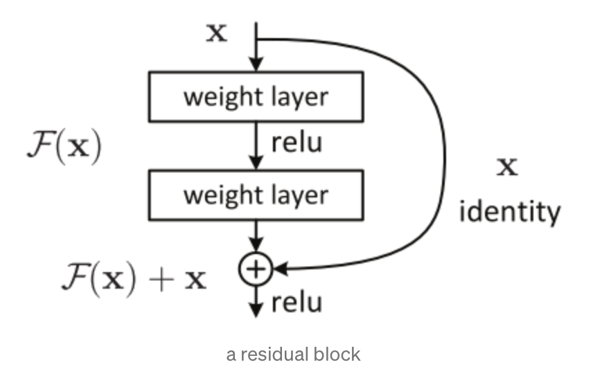
ResNet50 Block Diagram
Source: https://towardsdatascience.com/an-overview-of-resnet-and-its-variants-5281e2f56035
ResNet seeks to make the approximation of the identity function easier by adding explicit residual connections. In this project, we adopted the version ResNet50 which is a convolutional neural network of 50 layers.
By using ResNet50, we got the accuracy and ROC-AUC rate of 0.9136 and 0.9711 over the testing dataset. Applying test time augmentation, we could even improve the result of both accuracy and ROC-AUC rate to 0.9227 and 0.9756.
The following is a set of sample images of incorrect predictions with top 3 highest loss by ResNet50. 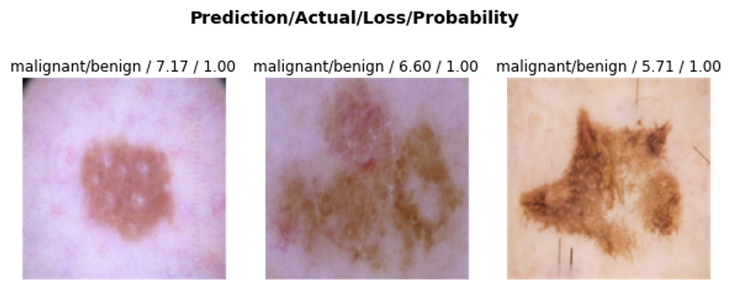
Top 3 Incorrect prediction by ResNet50 with top loss
ResNeXt101
ResNeXt is a simple, but highly modularized neural network architecture for image classification. The network is constructed by repeating a building block that aggregates a set of transformations with the same topology. [6] The simplicity of its network design will result in a homogeneous, multi-branch architecture which reduces the number of hyperparameters required by conventional ResNet. This strategy exposes an additional dimension called “cardinality” on top of the depth and width of ResNet. Cardinality is actually the size of the set of transformations. The following two figures demonstrate both conventional ResNet block (left) and the ResNeXt block. The ResNeXt block has cardinality of 32 indicating that the same transformations are being applied 32 times and the result is aggregated in the very end.
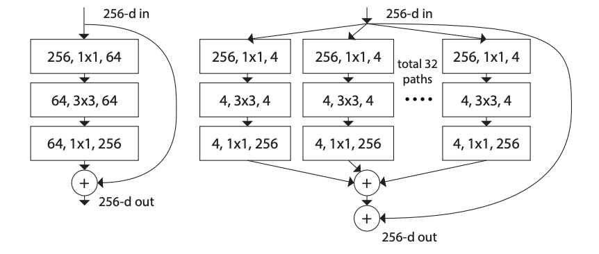
ResNet Block (left) and ResNeXt Block (right)
Source: https://towardsdatascience.com/an-overview-of-resnet-and-its-variants-5281e2f56035
In this project, we adopted the version ResNeXt101. By using ResNeXt101, we got the accuracy and ROC-AUC rate of 0.8788 and 0.9576 over the testing dataset. Applying test time augmentation, we could even improve the result of both accuracy and ROC-AUC rate to 0.9136 and 0.9693. The following is a set of sample images of incorrect predictions with top 3 highest loss by ResNeXt101.
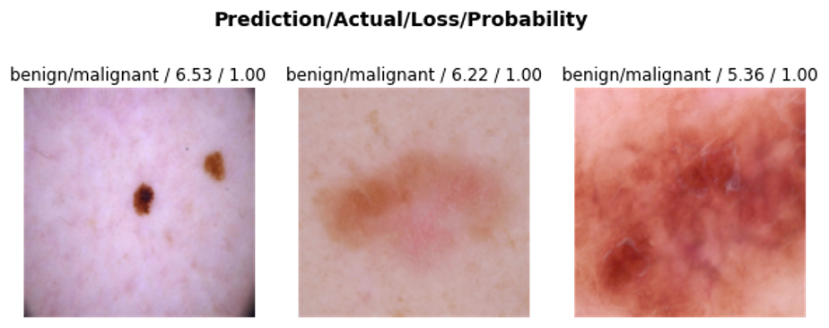
Top 3 Incorrect prediction by ResNeXt101 with top loss
VGG16
VGG16 is a convolutional neural network architecture and still considered to be one of the most used vision model architectures now. VGG takes 224x224 pixel RGB images as input. One of the special features of VGG 16 when compared to a standard convolutional network is that the model focuses on having a very small receptive field (3x3 filter) and always using the same padding and max pooling layer of 2x2 filter. The small sized convolution filters allows VGG to have a large number of weight layers, which leads to improved performance. In this project, we adopted the version VGG16.
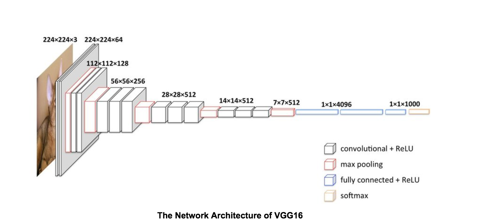
The Network Architecture of VGG16
Source: https://www.researchgate.net/figure/The-architecture-of-VGG-16-model-To-represent-different-depth-levels-convolutional_fig1_323440752
By using VGG16, we got the accuracy and ROC-AUC rate of 0.8939 and 0.9676 over the testing dataset. Applying test time augmentation, we could even improve the result of both accuracy and ROC-AUC rate to 0.8970 and 0.9694. The following is a set of sample images of incorrect predictions with top 3 highest loss by VGG16.

Top 3 Incorrect prediction by VGG16 with top loss
SqueezeNet1.1
SqueezeNet is a small CNN architecture that employs design strategies to reduce the number of parameters, notably with the use of fire modules that "squeeze" parameters using 1x1 convolutions instead of 3x3. SqueezeNet achieves AlexNet-level accuracy on ImageNet with 50x fewer parameters. Additionally, with model compression techniques, the size of the SqueezeNet could be compressed to less than 0.5MB (510 times smaller than AlexNet). [7] In this project, we adopted SqueezeNet1.1.

The Architecture of SqueezeNet
Source: https://stephan-osterburg.gitbook.io/coding/coding/ml-dl/tensorfow/untitled-2/squeezenet-architecture-design
By using SqueezeNet1.1, we got the accuracy and ROC-AUC rate of 0.8742 and 0.9538 over the testing dataset. Applying test time augmentation, we could even improve the result of both accuracy and ROC-AUC rate to 0.8939 and 0.9619. The following is a set of sample images of incorrect predictions with top 3 highest loss by SqueezeNet1.1.

Top 3 Incorrect prediction by SqueezeNet1.1 with top loss
EfficientNet-B0
CNN is normally developed at a fixed resource budget and then if more resources are available, it gets scaled up for better accuracy. In precious work, it’s pretty common to scale only one of the three dimensions: the depth of the network, the number of channels, and the input image resolution. Scaling two or even all three dimensions together is possible to deliver better results. The EfficientNet is a CNN architecture which implements a scaling method named compound scaling that strategically scales all three dimensions. In this project we adopted EfficientNet-B0 which is the baseline network developed by AutoML MNAS, while Efficient-B1 to B7 are obtained by scaling up the baseline network. [8]
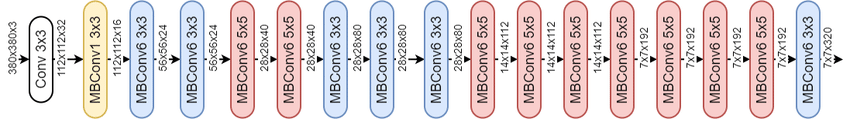
The Architecture of EfficientNetB0
Source: https://www.researchgate.net/figure/The-architecture-of-EfficientNet-b0_fig1_339462624
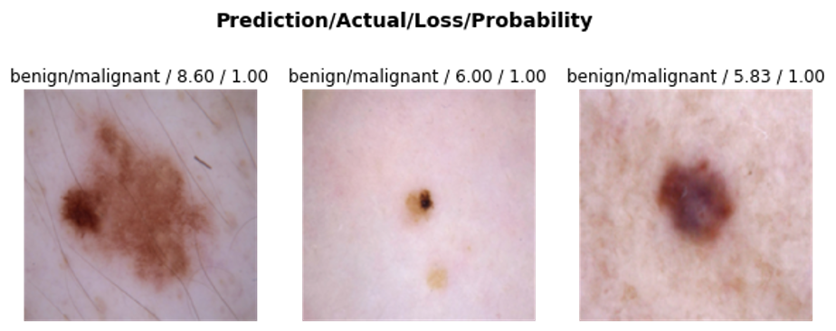
Top 3 Incorrect prediction by EfficientNetB0 with top loss
DenseNet169
Convolutional networks can be substantially deeper, more accurate, and efficient to train if they contain shorter connections between layers close to the input and those close to the output. For the traditional convolutional networks, due to the longer path between the input layer and the output layer, the information vanishes before reaching its destination. DenseNet connects each layer to every other layer in a feed-forward fashion. [9] It enjoys several compelling advantages including alleviating the vanishing-gradient problem, strengthening feature propagation, encouraging feature reuse, and substantially reducing the number of parameters.
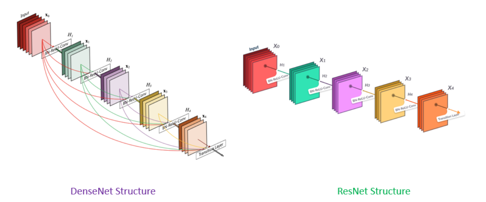
Network Structure Difference Between DenseNet and ResNet
Source: https://www.pluralsight.com/guides/introduction-to-densenet-with-tensorflow
In this project, we adopted the version DenseNet169 which specifically has 169 layers in the neural network. By using DenseNet169, we got the accuracy and ROC-AUC rate of 0.9015 and 0.9663 over the testing dataset. Applying test time augmentation, we could even improve the result of accuracy to 0.9061. The following is a set of sample images of incorrect predictions with top 3 highest loss by DenseNet169.
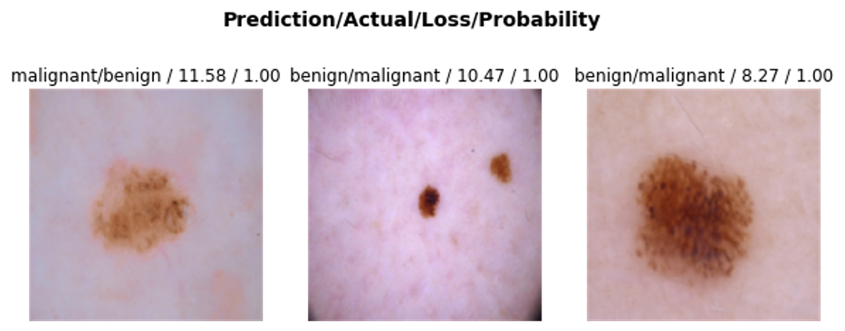
Top 3 Incorrect prediction by DenseNet169 with top loss
Summary of Transfer Learning Performance
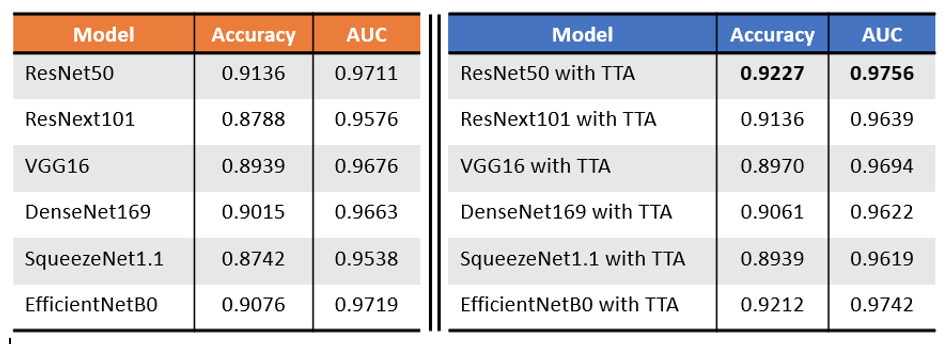
Transfer Learning Evaluation on Test Images: (left) Traditional Predictions, (right) Prediction with Test Time Augmentation
Ensemble Learning (EL)
We combine all models (ResNet50, VGG16, SqueezeNet, ResNext, DenseNet169, and EfficientNet-B0) to predict and classify skin-cancer images. In our ensemble learning, we have two sections, which are Meta learner (stacking), and Grid search weighted average ensemble [10]. We use validation images for training ensemble learning models. For Each section, the 10-fold cross-validation is used for measuring EL performance with AUC score. After having the optimal meta classifier and the best set of corresponding weights for transfer learning, we then evaluate the EL performance on a test dataset. In stacking meta learner, there are three subsections which use different classifiers i.e. Logistic Regression, Linear SVC, and Kernel SVC.
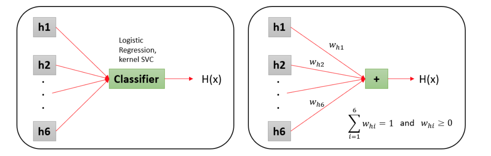
(right) Stacking Base Learners with Meta Classifier. (left) Grid Search Average Weights
Stacking Ensemble learning
10 Fold Cross Validation
Since we only have 396 images for training EL, we use 10-Fold CV to measure EL performance. The result turns out to be that the accuracy of each meta learner is very close. That means there is a little difference in the number of miss-classified images. Instead, we use AUC score for model evaluations, so Linear SVC is chosen as a meta classifier for stacking EL.